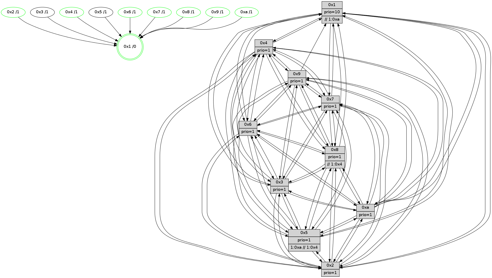

>> << IDX [start] -100 -25 -5 +0 +5 +25 +100 [640.390947104]
 Previous packets
----------------------------------------------------------------------
635.662162 beacon01(faad) #0 coord=01,02,03,04,05,06,07,0a,09,08 cycle=688.0ms assoc
-- color-indic=1 64 99 d5
635.672145 beacon02(faad) #0 coord=01,02,03,04,05,06,07,0a,09,08 cycle=688.0ms assoc 64 0a e4
635.682144 beacon03(faad) #0 coord=01,02,03,04,05,06,07,0a,09,08 cycle=688.0ms assoc 64 70 a9
635.692145 beacon04(faad) #0 coord=01,02,03,04,05,06,07,0a,09,08 cycle=688.0ms assoc 64 07 43
635.702146 beacon05(faad) #0 coord=01,02,03,04,05,06,07,0a,09,08 cycle=688.0ms assoc 64 7d 0e
635.712145 beacon06(faad) #0 coord=01,02,03,04,05,06,07,0a,09,08 cycle=688.0ms assoc 64 f3 d9
635.722147 beacon07(faad) #0 coord=01,02,03,04,05,06,07,0a,09,08 cycle=688.0ms assoc 64 89 94
635.732150 beacon0a(faad) #0 coord=01,02,03,04,05,06,07,0a,09,08 cycle=688.0ms assoc 64 f8 9f
635.742133 beacon09(faad) #0 coord=01,02,03,04,05,06,07,0a,09,08 cycle=688.0ms assoc 64 76 48
635.752150 beacon08(faad) #0 coord=01,02,03,04,05,06,07,0a,09,08 cycle=688.0ms assoc 64 0c 05
635.764251 [Hello(3): seq=408 sym=1,7,6,2,4,8,9,10,5 sysInfo= stat=1:0,7,14,1/7:10,0,15,3/6:2,7,12,6/2:13,13,13,7/4:0,10,13,4/8:5,15,12,2/9:9,9,2,6/10:9,8,12,5/5:9,3,15,5]
635.767653 [Hello(4): seq=408 sym=5,7,6,2,3,9,8,10,1 sysInfo= stat=5:4,11,13,6/7:3,4,2,2/6:10,12,2,6/2:15,11,12,6/3:8,11,10,3/9:7,15,14,3/8:13,7,0,7/10:8,5,0,6/1:12,12,12,1]
635.770495 [Hello(7): seq=408 sym=2,3,5,6,4,8,9,10,1 sysInfo=hasWarning stat=2:0,1,4,9/3:8,3,3,7/5:1,11,0,9/6:10,9,2,1/4:8,2,2,6/8:9,1,4,4/9:6,1,2,8/10:2,6,2,7/1:3,10,13,1]
635.773128 [Color(10) seq=66 @0:0 prio=1]
635.776034 [STC(1) #0.46 tree-change,inconsistent-stability,stable,to-color d=0]
635.777844 [Hello(6): seq=408 sym=2,3,5,4,7,9,8,10,1 sysInfo= stat=2:6,5,6,6/3:13,5,2,5/5:2,10,0,7/4:8,7,0,7/7:6,1,3,0/9:10,3,2,6/8:14,7,1,5/10:4,9,5,6/1:1,12,10,1]
635.781456 [Color(8) seq=88 @0:0 prio=1 >>1.@4,1.@6,1.@7]
----------------------------------------------------------------------
636.450291 beacon01(faad) #0 coord=01,02,03,04,05,06,07,0a,09,08 cycle=688.0ms assoc
-- color-indic=1 64 25 d0
636.460274 beacon02(faad) #0 coord=01,02,03,04,05,06,07,0a,09,08 cycle=688.0ms assoc 64 b6 e1
636.470276 beacon03(faad) #0 coord=01,02,03,04,05,06,07,0a,09,08 cycle=688.0ms assoc 64 cc ac
636.480273 beacon04(faad) #0 coord=01,02,03,04,05,06,07,0a,09,08 cycle=688.0ms assoc 64 bb 46
636.490274 beacon05(faad) #0 coord=01,02,03,04,05,06,07,0a,09,08 cycle=688.0ms assoc 64 c1 0b
636.500275 beacon06(faad) #0 coord=01,02,03,04,05,06,07,0a,09,08 cycle=688.0ms assoc 64 4f dc
636.510275 beacon07(faad) #0 coord=01,02,03,04,05,06,07,0a,09,08 cycle=688.0ms assoc 64 35 91
636.520278 beacon0a(faad) #0 coord=01,02,03,04,05,06,07,0a,09,08 cycle=688.0ms assoc 64 44 9a
636.530280 beacon09(faad) #0 coord=01,02,03,04,05,06,07,0a,09,08 cycle=688.0ms assoc 64 ca 4d
636.540280 beacon08(faad) #0 coord=01,02,03,04,05,06,07,0a,09,08 cycle=688.0ms assoc 64 b0 00
636.551666 [Hello(5): seq=409 sym=7,6,4,3,1,9,8,10,2 sysInfo= stat=7:9,8,2,3/6:11,8,1,5/4:4,12,12,5/3:15,14,10,3/1:13,3,11,1/9:14,13,15,3/8:12,4,9,4/10:14,4,0,5/2:11,3,13,4]
636.554249 [Hello(10): seq=341 sym=6,2,3,8,9,5,7,4,1 sysInfo= stat=6:5,13,2,1/2:3,4,5,1/3:11,1,6,2/8:9,0,14,6/9:7,8,11,4/5:12,5,10,6/7:15,11,15,2/4:6,12,9,6/1:1,13,12,1]
636.559836 [STC(7)->1 #0.46 tree-change,inconsistent-stability,stable,to-color d=1]
636.561079 [STC(9)->1 #0.46 tree-change,inconsistent-stability,stable,to-color d=1]
636.562337 [Color(6) seq=78 @0:0 prio=1]
636.566193 [TreeStatus(7)-.->1 #0.46 tree-change,inconsistent-stability,stable child=1]
636.567589 [STC(10)->1 #0.46 tree-change,inconsistent-stability,stable,to-color d=1]
636.569239 [Color(1) seq=89 @0:0 prio=10 >>1.@4,1.@6,1.@7]
636.572858 [STC(4)->1 #0.46 tree-change,inconsistent-stability,stable,to-color d=1]
636.574109 [STC(5)->1 #0.46 tree-change,inconsistent-stability,to-color d=1]
636.576062 [Hello(2): seq=405 sym=4,5,7,6,3,9,8,10,1 sysInfo=hasWarning stat=4:0,1,14,4/5:8,7,11,5/7:0,2,3,3/6:5,12,0,4/3:6,13,11,1/9:15,6,12,1/8:4,13,10,4/10:2,10,12,4/1:12,10,6,1]
636.580490 [STC(2)->1 #0.46 tree-change,inconsistent-stability,stable,to-color d=1]
636.582103 [Color(4) seq=52 @0:0 prio=1]
636.583771 [TreeStatus(3)-.->1 #0.46 tree-change,inconsistent-stability,stable child=1]
636.586734 [Color(2) seq=54 @0:0 prio=1]
----------------------------------------------------------------------
637.238422 beacon01(faad) #0 coord=01,02,03,04,05,06,07,0a,09,08 cycle=688.0ms assoc
-- color-indic=1 64 e1 de
637.248405 beacon02(faad) #0 coord=01,02,03,04,05,06,07,0a,09,08 cycle=688.0ms assoc 64 72 ef
637.258404 beacon03(faad) #0 coord=01,02,03,04,05,06,07,0a,09,08 cycle=688.0ms assoc 64 08 a2
637.268404 beacon04(faad) #0 coord=01,02,03,04,05,06,07,0a,09,08 cycle=688.0ms assoc 64 7f 48
637.278404 beacon05(faad) #0 coord=01,02,03,04,05,06,07,0a,09,08 cycle=688.0ms assoc 64 05 05
637.288404 beacon06(faad) #0 coord=01,02,03,04,05,06,07,0a,09,08 cycle=688.0ms assoc 64 8b d2
637.298405 beacon07(faad) #0 coord=01,02,03,04,05,06,07,0a,09,08 cycle=688.0ms assoc 64 f1 9f
637.308410 beacon0a(faad) #0 coord=01,02,03,04,05,06,07,0a,09,08 cycle=688.0ms assoc 64 80 94
637.318410 beacon09(faad) #0 coord=01,02,03,04,05,06,07,0a,09,08 cycle=688.0ms assoc 64 0e 43
637.328410 beacon08(faad) #0 coord=01,02,03,04,05,06,07,0a,09,08 cycle=688.0ms assoc 64 74 0e
637.339962 [Hello(4): seq=409 sym=5,7,6,2,3,9,8,10,1 sysInfo= stat=5:5,11,14,6/7:4,4,2,2/6:11,12,2,6/2:15,12,12,6/3:8,11,10,4/9:7,15,14,3/8:13,8,0,7/10:9,6,0,6/1:12,12,13,1]
637.342644 [Hello(6): seq=409 sym=2,3,5,4,7,9,8,10,1 sysInfo= stat=2:7,6,7,6/3:13,5,2,6/5:3,10,1,7/4:8,8,1,7/7:6,1,3,1/9:10,3,2,6/8:15,8,1,5/10:4,9,6,6/1:1,13,10,1]
637.345848 [Hello(7): seq=409 sym=2,3,5,6,4,8,9,10,1 sysInfo=hasWarning stat=2:1,2,5,9/3:8,3,3,8/5:1,11,1,9/6:11,9,2,1/4:8,3,3,6/8:9,2,4,4/9:6,1,3,8/10:2,7,3,7/1:3,11,14,1]
637.348377 [Color(10) seq=67 @0:0 prio=1]
637.350792 [Hello(3): seq=409 sym=1,7,6,2,4,8,9,10,5 sysInfo= stat=1:1,7,15,1/7:11,0,15,3/6:3,7,12,6/2:13,14,13,7/4:0,10,13,4/8:5,0,12,2/9:9,9,2,6/10:9,9,12,5/5:9,3,15,5]
637.354346 [Hello(1): seq=318 sym=4,2,9,5,10,3,8,6,7 sysInfo=coloring-mode-on,ColoringModeRequestCalled stat=4:1,2,1,0/2:12,15,4,8/9:6,2,3,0/5:7,15,6,8/10:6,1,6,7/3:11,6,12,9/8:15,11,10,6/6:9,15,7,5/7:13,5,11,7]
637.361310 [Color(8) seq=89 @0:0 prio=1 >>1.@4,1.@6,1.@7]
----------------------------------------------------------------------
638.026553 beacon01(faad) #0 coord=01,02,03,04,05,06,07,0a,09,08 cycle=688.0ms assoc
-- color-indic=1 64 5d db
638.036536 beacon02(faad) #0 coord=01,02,03,04,05,06,07,0a,09,08 cycle=688.0ms assoc 64 ce ea
638.046536 beacon03(faad) #0 coord=01,02,03,04,05,06,07,0a,09,08 cycle=688.0ms assoc 64 b4 a7
638.056536 beacon04(faad) #0 coord=01,02,03,04,05,06,07,0a,09,08 cycle=688.0ms assoc 64 c3 4d
638.066537 beacon05(faad) #0 coord=01,02,03,04,05,06,07,0a,09,08 cycle=688.0ms assoc 64 b9 00
638.076537 beacon06(faad) #0 coord=01,02,03,04,05,06,07,0a,09,08 cycle=688.0ms assoc 64 37 d7
638.086538 beacon07(faad) #0 coord=01,02,03,04,05,06,07,0a,09,08 cycle=688.0ms assoc 64 4d 9a
638.096541 beacon0a(faad) #0 coord=01,02,03,04,05,06,07,0a,09,08 cycle=688.0ms assoc 64 3c 91
638.106542 beacon09(faad) #0 coord=01,02,03,04,05,06,07,0a,09,08 cycle=688.0ms assoc 64 b2 46
638.116542 beacon08(faad) #0 coord=01,02,03,04,05,06,07,0a,09,08 cycle=688.0ms assoc 64 c8 0b
638.128980 [Hello(5): seq=410 sym=7,6,4,3,1,9,8,10,2 sysInfo= stat=7:10,8,2,3/6:12,8,1,5/4:5,13,12,5/3:0,14,10,4/1:14,3,11,1/9:14,13,15,3/8:12,5,9,4/10:14,5,0,5/2:12,4,14,4]
638.132021 [Hello(9): seq=353 sym=5,2,3,4,7,6,8,10,1 sysInfo=hasWarning stat=5:3,6,14,7/2:11,13,1,5/3:3,10,11,6/4:7,10,13,5/7:1,13,3,3/6:8,7,15,5/8:10,6,3,2/10:15,1,15,7/1:9,0,15,1]
638.134710 [Color(4) seq=53 @0:0 prio=1]
638.136001 [Hello(2): seq=406 sym=4,5,7,6,3,9,8,10,1 sysInfo=hasWarning stat=4:1,1,14,4/5:9,7,11,5/7:1,2,3,3/6:6,12,0,4/3:7,13,11,1/9:15,6,12,1/8:4,14,10,4/10:3,11,12,4/1:13,10,6,1]
638.138634 [Color(6) seq=79 @0:0 prio=1]
638.139976 [Color(3) seq=74 @0:0 prio=1]
638.142420 [Hello(10): seq=342 sym=6,2,3,8,9,5,7,4,1 sysInfo= stat=6:6,13,2,1/2:4,5,6,1/3:12,1,6,3/8:9,1,14,6/9:7,8,11,4/5:12,5,11,6/7:15,11,15,2/4:7,13,10,6/1:2,14,12,1]
638.145502 [Color(2) seq=55 @0:0 prio=1]
638.149709 [Color(7) seq=62 @0:0 prio=1]
638.151038 [Hello(8): seq=353 sym=5,2,3,4,7,6,9,10,1 sysInfo=hasWarning,coloring-mode-on,ColoringModeIndicationCalled stat=5:1,3,14,5/2:5,6,5,1/3:8,2,13,8/4:12,13,1,6/7:5,10,2,5/6:0,13,13,6/9:8,7,1,5/10:5,0,13,6/1:5,3,14,0]
----------------------------------------------------------------------
638.814685 beacon01(faad) #0 coord=01,02,03,04,05,06,07,0a,09,08 cycle=688.0ms assoc
-- color-indic=1 64 69 c3
638.824667 beacon02(faad) #0 coord=01,02,03,04,05,06,07,0a,09,08 cycle=688.0ms assoc 64 fa f2
638.834668 beacon03(faad) #0 coord=01,02,03,04,05,06,07,0a,09,08 cycle=688.0ms assoc 64 80 bf
638.844667 beacon04(faad) #0 coord=01,02,03,04,05,06,07,0a,09,08 cycle=688.0ms assoc 64 f7 55
638.854668 beacon05(faad) #0 coord=01,02,03,04,05,06,07,0a,09,08 cycle=688.0ms assoc 64 8d 18
638.864668 beacon06(faad) #0 coord=01,02,03,04,05,06,07,0a,09,08 cycle=688.0ms assoc 64 03 cf
638.874669 beacon07(faad) #0 coord=01,02,03,04,05,06,07,0a,09,08 cycle=688.0ms assoc 64 79 82
638.884675 beacon0a(faad) #0 coord=01,02,03,04,05,06,07,0a,09,08 cycle=688.0ms assoc 64 08 89
638.894673 beacon09(faad) #0 coord=01,02,03,04,05,06,07,0a,09,08 cycle=688.0ms assoc 64 86 5e
638.904672 beacon08(faad) #0 coord=01,02,03,04,05,06,07,0a,09,08 cycle=688.0ms assoc 64 fc 13
638.915912 [Hello(3): seq=410 sym=1,7,6,2,4,8,9,10,5 sysInfo= stat=1:2,7,15,1/7:11,1,15,3/6:3,7,12,6/2:13,15,13,7/4:0,10,13,4/8:6,1,12,2/9:9,9,2,6/10:10,9,12,5/5:10,3,15,5]
638.919303 [Hello(1): seq=319 sym=4,2,5,10,3,8,6,7 sysInfo=coloring-mode-on,ColoringModeRequestCalled stat=4:1,3,1,0/2:13,0,4,8/5:8,15,6,8/10:7,1,6,7/3:11,7,12,9/8:0,12,10,6/6:9,0,7,5/7:13,6,11,7]
638.922414 [Hello(7): seq=410 sym=2,3,5,6,4,8,9,10,1 sysInfo=hasWarning stat=2:1,2,5,9/3:9,3,3,8/5:2,11,1,9/6:11,9,2,1/4:8,3,3,6/8:10,3,4,4/9:6,1,3,8/10:2,8,3,7/1:4,11,14,1]
638.925115 [Hello(4): seq=410 sym=5,7,6,2,3,9,8,10,1 sysInfo= stat=5:6,11,14,6/7:5,5,2,2/6:12,13,2,6/2:0,13,12,6/3:9,11,10,4/9:7,0,14,3/8:14,9,0,7/10:10,7,0,6/1:13,12,13,1]
638.931274 [Color(10) seq=68 @0:0 prio=1]
638.934358 [Hello(6): seq=410 sym=2,3,5,4,7,9,8,10,1 sysInfo= stat=2:7,7,7,6/3:14,6,2,6/5:4,10,1,7/4:8,8,1,7/7:7,2,3,1/9:10,3,2,6/8:0,9,1,5/10:5,10,6,6/1:2,13,10,1]
----------------------------------------------------------------------
639.602815 beacon01(faad) #0 coord=01,02,03,04,05,06,07,0a,09,08 cycle=688.0ms assoc
-- color-indic=1 64 d5 c6
639.612798 beacon02(faad) #0 coord=01,02,03,04,05,06,07,0a,09,08 cycle=688.0ms assoc 64 46 f7
639.622797 beacon03(faad) #0 coord=01,02,03,04,05,06,07,0a,09,08 cycle=688.0ms assoc 64 3c ba
639.632798 beacon04(faad) #0 coord=01,02,03,04,05,06,07,0a,09,08 cycle=688.0ms assoc 64 4b 50
639.642798 beacon05(faad) #0 coord=01,02,03,04,05,06,07,0a,09,08 cycle=688.0ms assoc 64 31 1d
639.652799 beacon06(faad) #0 coord=01,02,03,04,05,06,07,0a,09,08 cycle=688.0ms assoc 64 bf ca
639.662798 beacon07(faad) #0 coord=01,02,03,04,05,06,07,0a,09,08 cycle=688.0ms assoc 64 c5 87
639.672803 beacon0a(faad) #0 coord=01,02,03,04,05,06,07,0a,09,08 cycle=688.0ms assoc 64 b4 8c
639.682806 beacon09(faad) #0 coord=01,02,03,04,05,06,07,0a,09,08 cycle=688.0ms assoc 64 3a 5b
639.692804 beacon08(faad) #0 coord=01,02,03,04,05,06,07,0a,09,08 cycle=688.0ms assoc 64 40 16
639.704299 [Hello(5): seq=411 sym=7,6,4,3,1,9,8,10,2 sysInfo= stat=7:11,9,2,3/6:13,9,1,5/4:6,14,12,5/3:1,14,10,4/1:15,3,11,1/9:15,14,15,3/8:13,5,9,4/10:15,6,0,5/2:13,5,14,4]
639.710199 [Hello(2): seq=407 sym=4,5,7,6,3,9,8,10,1 sysInfo=hasWarning stat=4:2,1,14,4/5:10,7,11,5/7:2,3,3,3/6:7,12,0,4/3:8,13,11,1/9:15,6,12,1/8:5,14,10,4/10:3,12,12,4/1:14,10,6,1]
639.713044 [Color(3) seq=75 @0:0 prio=1]
639.714290 [Color(2) seq=56 @0:0 prio=1]
639.716105 [Hello(10): seq=343 sym=6,2,3,8,9,5,7,4,1 sysInfo= stat=6:7,13,2,1/2:4,6,6,1/3:13,1,6,3/8:10,1,14,6/9:7,8,11,4/5:12,5,11,6/7:15,12,15,2/4:7,13,10,6/1:2,14,12,1]
639.720245 [STC(1) #0.47 tree-change,inconsistent-stability,stable,to-color d=0]
639.723143 [Color(1) seq=91 @0:0 prio=10 >>1.@a]
639.725256 [Color(4) seq=54 @0:0 prio=1]
639.728986 [Hello(9): seq=354 sym=5,2,3,4,7,6,8,10,1 sysInfo=hasWarning stat=5:4,6,14,7/2:11,14,1,5/3:4,10,11,6/4:8,10,13,5/7:1,14,3,3/6:9,7,15,5/8:11,7,3,2/10:0,2,15,7/1:10,0,15,1]
639.732523 [Color(7) seq=63 @0:0 prio=1]
639.737690 [Color(9) seq=59 @0:0 prio=1]